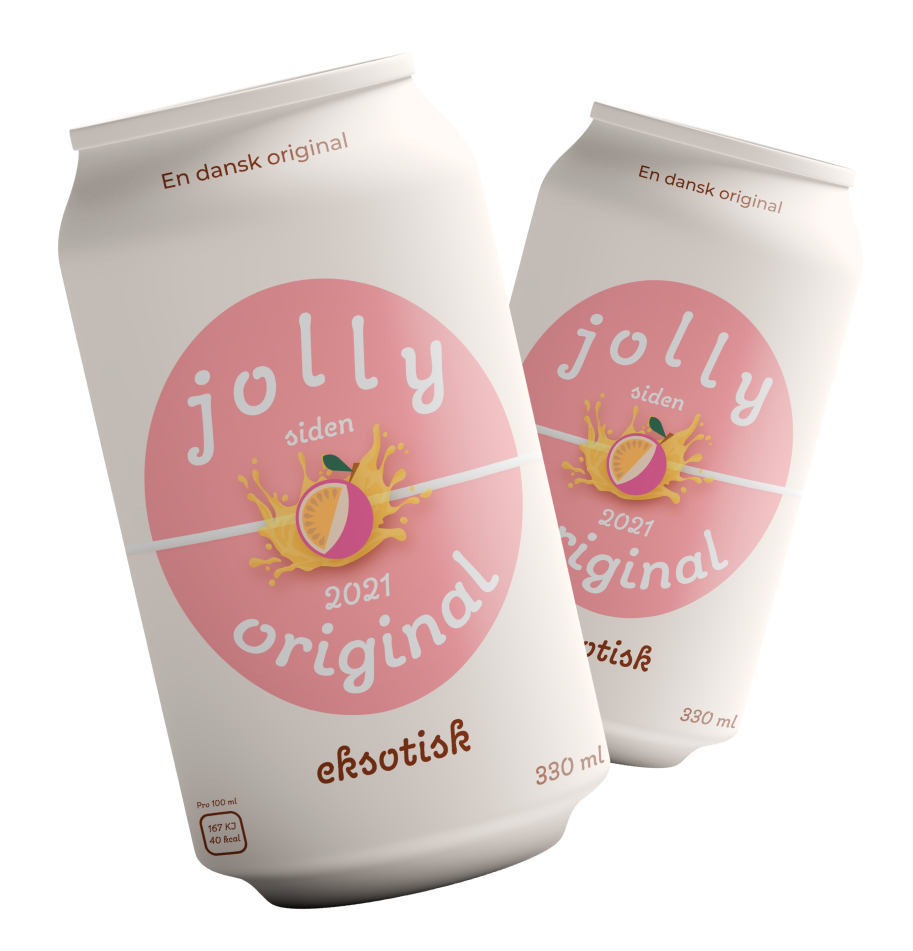
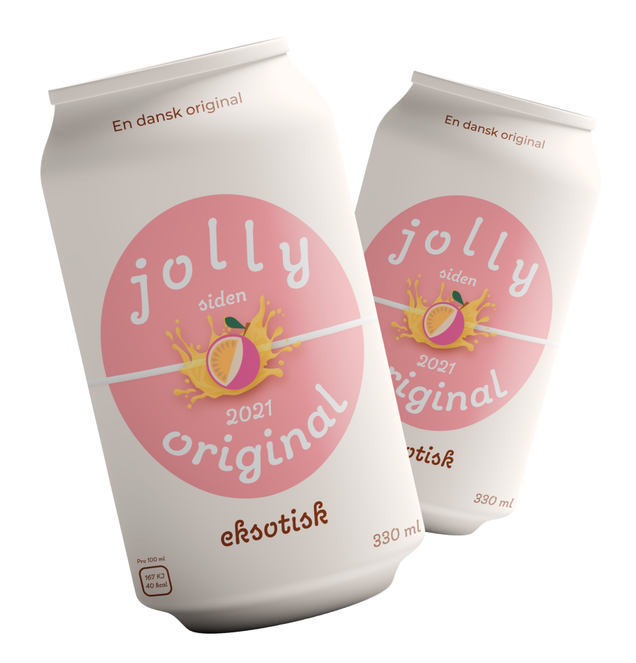

Efter jolly colas store succes med både cola, appelsin og cola light produkterne, blev sortimentet igen udviddet i 2005, da jolly time blev lanceret som jollys første sportssodavand. Med smag af frisk lime og citron er jolly time det sikre valg, når det kommer til sportssodavand. Den er en klassisker, og bliver den sidste nye jolly sodavand på markedet i nogle år, som stadig kan købes i dag. Hvis du leder efter en ægte dansk sportsvand, så behøver du ikke at lede længere. Alle jolly sodavand er danske originaler - produceret af bryggeriet Vestfyen.


 
